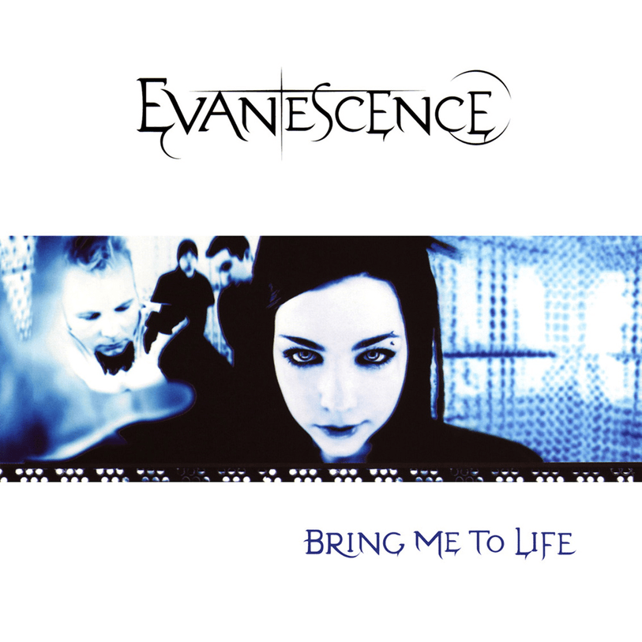
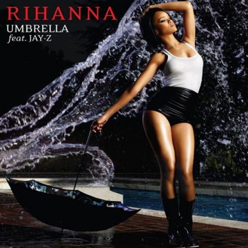
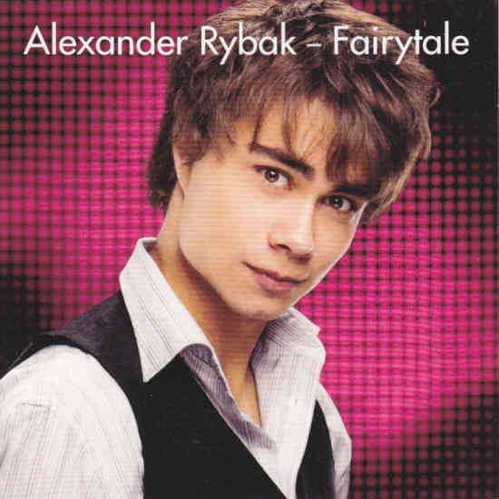
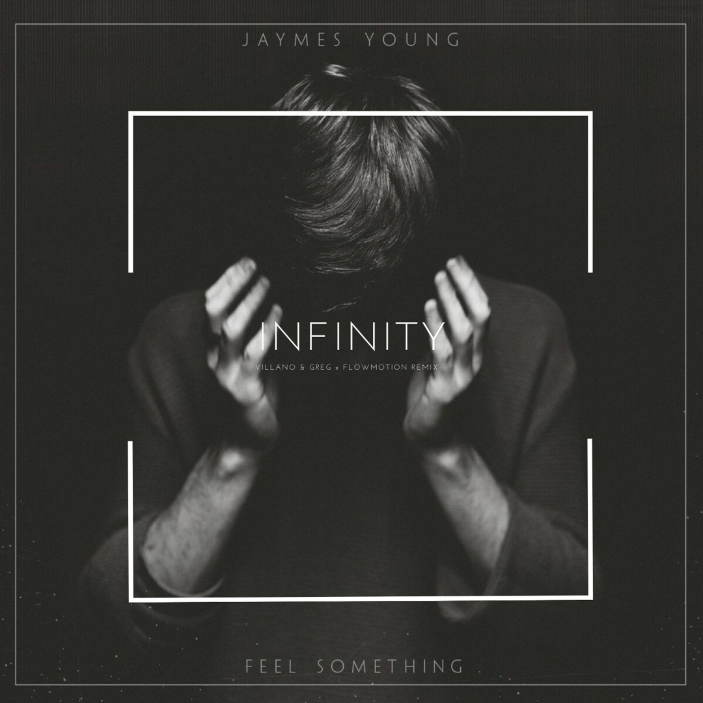

1º- Bring me To life

É um Rock alternativo com influências góticas, combinando vocais de rap e guitarras pesadas. A letra fala sobre superar relacionamentos ruins e encontrar a luz
2º- Only Girl (in the World)

É um estilo Pop com batidas eletrônicas. A música expressa o desejo de ser o centro da atenção e amor de alguém.
3º- Umbrella

Também é uma música Pop juntamente com R&B, com batida marcante e refrão icônico. A letra fala sobre apoio incondicional em tempos difíceis.
4º- FairyTale

É um pop folclórico com influências do leste europeu, o mais marcante da música é o uso do violino. A canção fala sobre amor idealizado e memórias românticas.
5º- No love doublplate

É Reggae roots com um estilo consciente e espiritual. A letra aborda a falta de amor verdadeiro e crítica social.
6º- Infinity

É um pop eletrônico com atmosfera melancólica. A música trata de um amor eterno e da promessa de estar junto para sempre.
7º- That's my way

É um rap brasileiro com fusões de soul e R&B. A letra fala sobre superação, fé e manter-se firme diante das adversidades.
8º- Paint it black

É um estilo de rock psicodélico com riffs de guitarra marcantes e uso de cítara. A letra expressa luto, dor emocional e escuridão interior.
9º- Head & Heart

É uma música pop eletrônica com vibe animada. Fala sobre o conflito entre razão e emoção em um relacionamento.
10º- Meu mestre

É uma música/louvor Gospel com influências do axé e MPB. A letra é um louvor de entrega e confiança em Jesus como guia e mestre da vida.